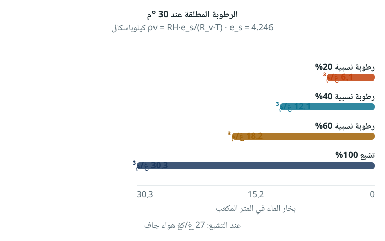

الرطوبة والرطوبة النسبية
Humidity
كمية بخار الماء في الهواء تُقاس ثلاث طرائق: مطلقة بالغرام في المتر المكعب، ونسبة خلط بالغرام في الكيلوغرام، ونسبية كنسبة إلى سعة التشبع التي تحددها الحرارة وحدها.
الرطوبة النسبية نسبة بخار الماء الموجود في الهواء إلى أقصى ما يستطيع حمله عند الحرارة نفسها، وتُعطى بمئة مثل. أما الرطوبة المطلقة فكمية البخار في حجم واحد، ونسبة الخلط كتلة بخار إلى كتلة هواء جاف. الثلاثة تصف المحتوى نفسه بثلاث طرائق، والفرق بينها يفسّر لماذا يصعب تبريد الجسم بالعرق عند رطوبة عالية.
الحد الأعلى للبخار تحدده الحرارة: قدرة الهواء على حمل الماء تتضاعف تقريبًا كل عشر درجات. لذلك يرفع تبريد الهواء رطوبته النسبية بلا إضافة بخار، وتخفض تدفئته رطوبته النسبية بلا إزالة بخار.
كيف تعمل الظاهرة؟
البخار ينتج من التبخر حتى يتساوى معدل التبخر مع معدل التكاثف، وعندها يكون الهواء مشبعًا ورطوبته النسبية 100%. الضغط الجزئي للبخار e يحسب من الرطوبة النسبية: e = RH·e_s(T)/100، حيث e_s ضغط البخار المشبع ويعتمد على الحرارة وحدها لا على ضغط الهواء. التكاثف يحدث حين يبرد البخار فيتجاوز ضغطه الجزئي ضغط التشبع، فينتقل إلى الماء السائل على النوى أو على سطح أبرد. الرطوبة تنتقل بالانتشار وبتدفق الهواء معًا، فالسطح البارد في المنزل يجفّف الهواء المحيط بتكثيف البخار عليه، والعكس يحدث عند سطح دافئ رطب.
العلاقة بالأرقام
عند 30 °م يكون e_s = 4.246 كيلوباسكال. الرطوبة المطلقة عند التشبع ρv = e/(R_v·T) = 4246/(461.5 × 303.15) = 30.3 غ/م³. ونسبة الخلط 0.622·e/(P − e) = 27 غ/كغ عند ضغط 1013 هكتوباسكال. برطوبة نسبية 60% تصبح الكمية 18.2 غ/م³، وعند 40% نحو 12.1 غ/م³. والحساب يبيّن أن خفض الحرارة من 30 إلى 20 °م يضاعف الرطوبة النسبية تقريبًا، لأن e_s يهبط من 4.246 إلى 2.339 كيلوباسكال بلا تغيّر في كتلة البخار.
مفاهيم متقاربة
الخلط الأول: عبارة «رطوبة 50%» بلا ذكر حرارة ناقصة؛ فهي 50% من سعة حرارة معيّنة. الثاني: الرطوبة النسبية ليست كمية بخار بل نسبة؛ والهواء الساخن رطب نسبيًّا قد يحتوي بخارًا أكثر من هواء بارد مشبع. الثالث: الرطوبة المطلقة والرطوبة النوعية تختلفان بالوحدة وبالسلوك، فالأولى تتغير بالحرارة والضغط، والثانية تبقى ثابتة في كتلة هواء تتحرك. الرابع: البخار ليس «هواءً رطبًا» بل غاز مستقل في مزيج، ويُقاس بضغطه الجزئي لا بكتلته وحدها.
حدود التطبيق
الرطوبة النسبية مقياس مضلّل في التحليل الحراري لأنها تتغير بمتغيرين: كمية البخار والحرارة، لذلك تُفضَّل نسبة الخلط في حساب التجفيف والتبريد التبخيري. مقياس الشعر يعطي خطأً عند الرطوبة العالية ويحتاج معايرة. فوق 100% توصف الحالة تشبعًا فائقًا وهي غير مستقرة، والهواء النقي الخالي من النوى لا يتكثف عند 100% بل عند تشبع أعلى ببضع مئات بالمئة. وفي جوّ غير متوازن، كما في السحاب، لا تعرّف رطوبة واحدة للهواء كله.

| الكمية | القيمة | المصدر |
|---|---|---|
| ضغط البخار المشبع عند 30 °م | 4.246 كيلوباسكال | [1] |
| الرطوبة المطلقة عند التشبع و30 °م | 30.3 غ/م³ | [1] |
| نسبة الخلط عند التشبع و30 °م | 27 غ/كغ هواء جاف | [1] |
| ضغط البخار المشبع عند 20 °م | 2.339 كيلوباسكال | [2] |
المصادر
- 1 Relative Humidity — NOAA National Weather Service — JetStream. www.weather.gov/jetstream/rh · اطُّلع عليه 2026-11-16
- 2 Why Dewpoint Is a Better Measure of Moisture Than Relative Humidity — NOAA National Weather Service — La Crosse. www.weather.gov/arx/why_dewpoint_vs_humidity · اطُّلع عليه 2026-11-16
استشهد بهذا المصطلح
الصيغتان مبنيتان من بيانات الصفحة نفسها: العنوان والتاريخ ورابط النسخة المنشورة.
الرطوبة والرطوبة النسبية — Humidity. (2026). ديوان المعرفة — انفراد. https://infiradev.com/diwan/terms/humidity.html
@misc{humidity2026,
title = {الرطوبة والرطوبة النسبية},
titleaddon = {Humidity},
howpublished = {{ديوان المعرفة — انفراد} — مرجع علمي عربي},
year = {2026},
url = {https://infiradev.com/diwan/terms/humidity.html},
urldate = {2026-11-16},
note = {مراجعة علمية: مراجعة آلية — ديوان المعرفة (روابط المصادر + عقد المحتوى + وجود الرسم) 2026-11-16}
}
راجعه: مراجعة آلية — ديوان المعرفة (روابط المصادر + عقد المحتوى + وجود الرسم) 2026-11-16 · 2026-11-16 · آخر تحديث 2026-11-16